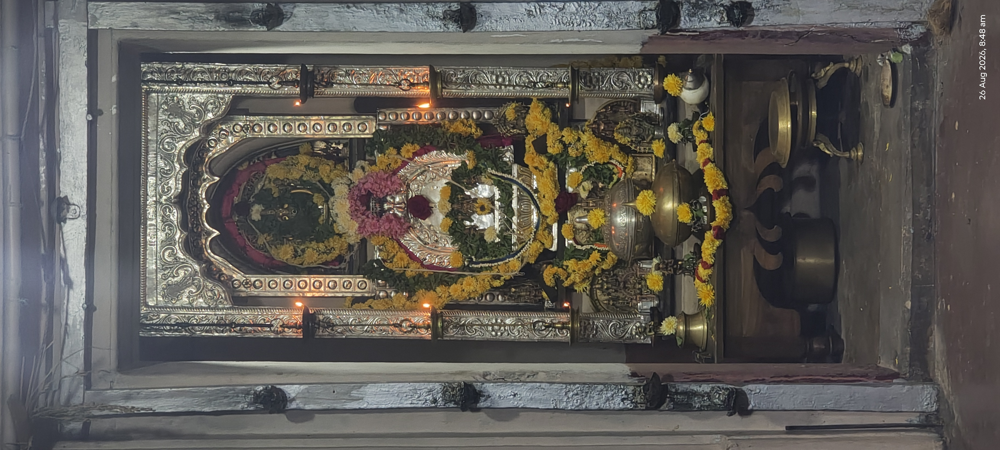
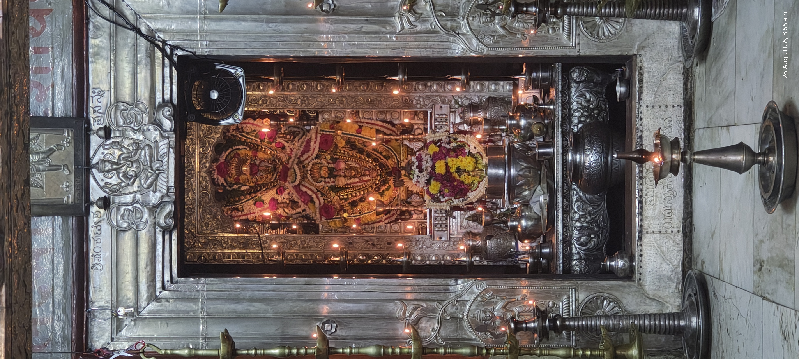
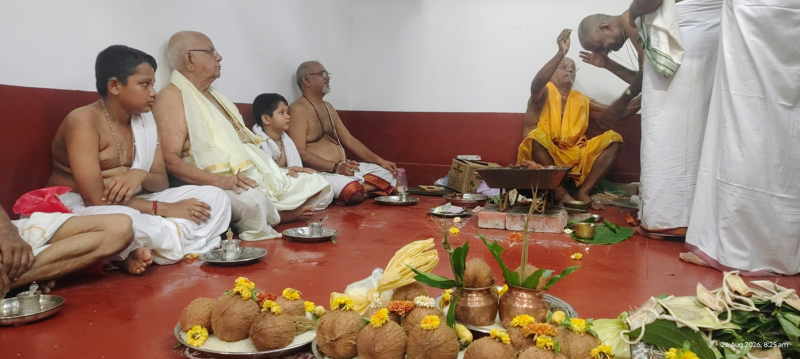
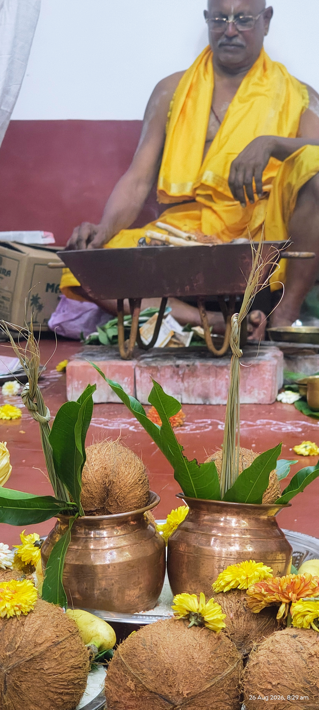
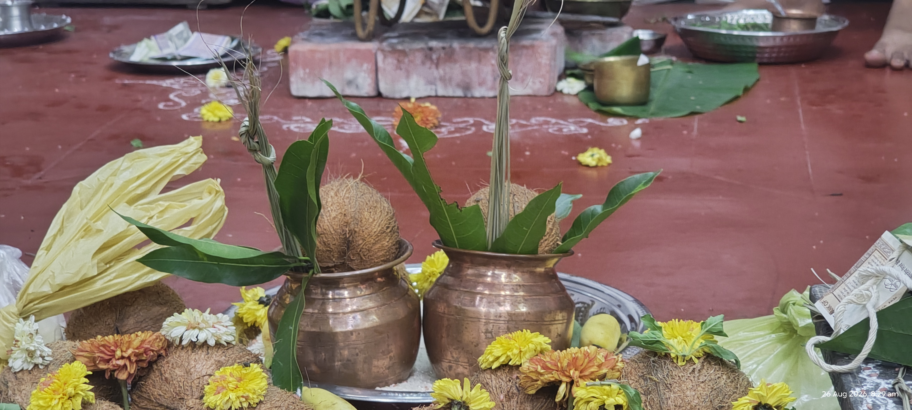
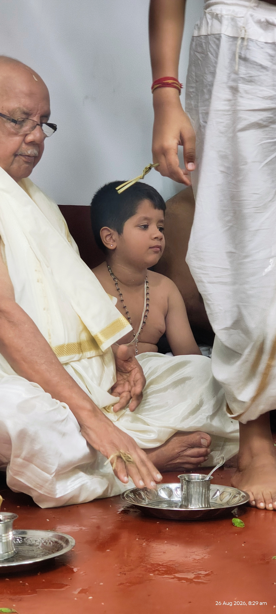
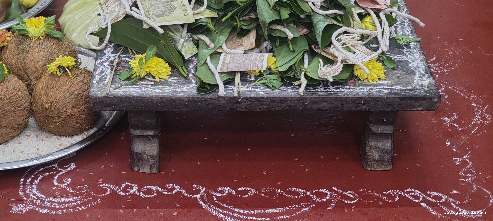
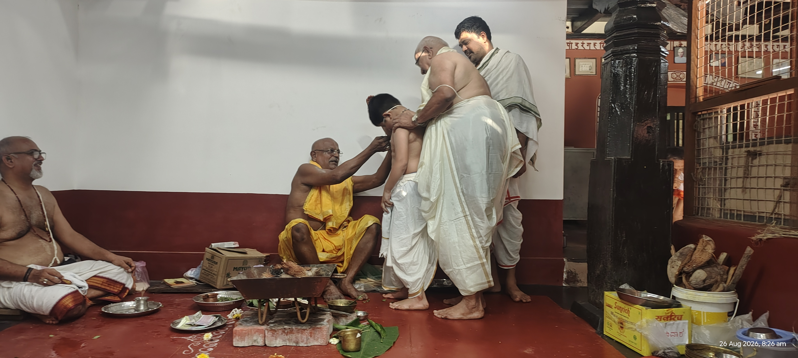
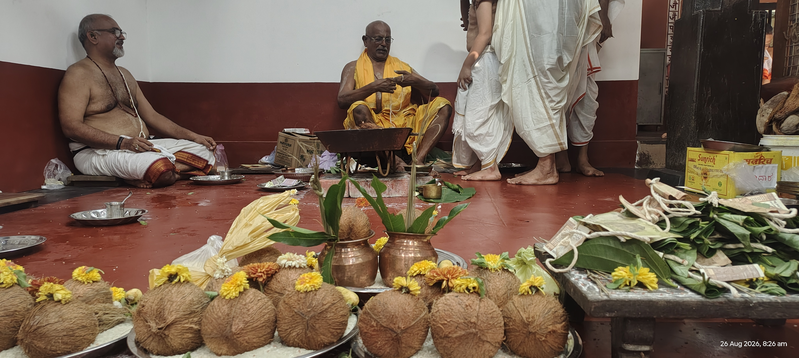

In modern times, the profound ritual of Upākarma is often popularly reduced to "the day we change the sacred thread" (Yajñopavīta). However, when we examine the authentic source texts for the Rig Veda—specifically the Āśvalāyana Gṛhya Sūtra (III.5)—a completely different and deeply academic, spiritual architecture emerges.
For the followers of the Ṛgveda Śākala tradition, Upākarma is strictly the Adhyāyopākaraṇa: the rite marking the opening of the annual course of Vedic study[cite: 4]. Let us explore the exact sūtras, their word-by-word meanings, and the true sequence of this magnificent tradition.
Opening of Study
Preparing Faculties
Harmony & Intellect
Six Months of Study
Release of Cycle
The Āśvalāyana tradition presents a clear annual rhythm: an inauguration of study (Vārṣika), six months of sustained learning, and a formal conclusion.
The Definition: Adhyāyopākaraṇa
Sūtra III.5.1
The Āśvalāyana Gṛhya Sūtra opens the discussion with a clear statement of intent:
atha adhyāyopākaraṇam
- atha — now; thereafter
- adhyāyasya — of the study / lesson / Vedic course
- upākaraṇam — commencement, undertaking, beginning
Meaning: "Now [follows] the commencement of the course of Vedic study."
The traditional commentator Nārāyaṇa explains adhyāya here as the Veda itself, and upākaraṇa as its commencement. It is fundamentally a Vedic-study opening rite[cite: 4].
Astronomical Timing: More than just Pūrṇimā
Sūtra III.5.2–3
A common misconception is that Upākarma always happens exactly on the generic "Śrāvaṇa Pūrṇimā." The Āśvalāyana text is much more precise astronomically.
oṣadhīnāṃ prādurbhāve śravaṇena śrāvaṇasya | pañcamyāṃ hastena vā |
- oṣadhīnām prādurbhāve — at the appearance/emergence of the herbs/plants.
- śravaṇena śrāvaṇasya — with Śravaṇa (the nakṣatra); in the month of Śrāvaṇa.
- pañcamyām hastena vā — or on the fifth [tithi] under Hasta.
Meaning: "When the herbs have appeared, with Śravaṇa in Śrāvaṇa; or on the fifth [tithi], under Hasta."[cite: 4] This connects the rite intimately with the Śravaṇa nakṣatra, giving Śrāvaṇa Pañcamī under Hasta as the traditional alternative.
The Ājya Offerings: Invoking the Faculties of Learning
Sūtra III.5.4
During the ritual, clarified butter (Ājya) is offered. The deities invoked here are not random; they represent the exact psychological and spiritual conditions necessary for mastering the Veda.
| Deity / Principle Invoked | Meaning & Significance to Vedic Study |
|---|---|
| Sāvitrī & Brahman | The divine power of Savitṛ and the sacred Vedic principle. |
| Śraddhā | Faith, trust, and devoted confidence. |
| Medhā | Intelligence and retentive intellectual capacity. |
| Prajñā | Discernment and higher knowing. |
| Smṛti | Memory and steadfastness. |
| Sadasaspati & Anumati | Lord of the ritual assembly, and divine approval/consent. |
| Chandas & Ṛṣis | The very meters of Vedic speech and the seers who transmit them. |
Veda Ārambha: The Actual Recommencement
The transition from preparatory offerings to actual Vedic recitation is a highly structured sequence (Sūtras III.5.10–12).
The Saṃjñāna Mantra (Sūtra III.5.8)
Within a Vedic-study initiation, this is not merely a generic social prayer. It establishes shared intention and mental concord among the teacher and the students.
समानी व आकूतिः समाना हृदयानि वः । समानमस्तु वो मनो यथा वः सुसहासति ॥
samānī vaḥ ākūtiḥ samānāḥ hṛdayāni vaḥ | samānam astu vaḥ manaḥ yathā vaḥ susahāsati ||
"Let your intention be one; let your hearts be one. Let your mind be one, so that you may live in harmonious accord." (Ṛgveda X.191.4)
Glimpses of Vaidika Upakarma at Vitthal Math, Kundapura
Visual moments capturing the sanctity, discipline, and communal harmony of the Upākarma rituals in process.







The Six-Month Study Cycle (Vārṣika)
The Āśvalāyana Gṛhya Sūtra concludes by defining the timeline of this endeavor in Sūtra III.5.14:
ṣaṭ māsān adhīyīta — "He should study for six months."
This period of learning is called the Vārṣika (the rainy-season/annual rite). It inaugurates a defined cycle of sustained study that eventually concludes with the Utsarga / Utsarjana ritual in the middle Aṣṭakā (Sūtras III.5.19–23)[cite: 4].
Textual Sources & External Links
- Āśvalāyana Gṛhya Sūtra III.5: The primary source for the Adhyāyopākaraṇa[cite: 4]. Full details and translations available via Wisdom Library.
- Commentary of Nārāyaṇa: Authoritative source for the interpretation of 'adhyāya' as the Veda itself[cite: 4]. Referenced via Jainqq.
- Rigveda Saṁhitā: Verses 1.1.1, 3.62.10, and 10.191.4 utilized in the study invocation[cite: 4].